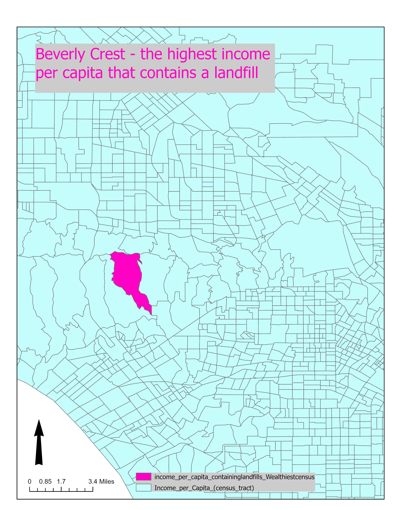
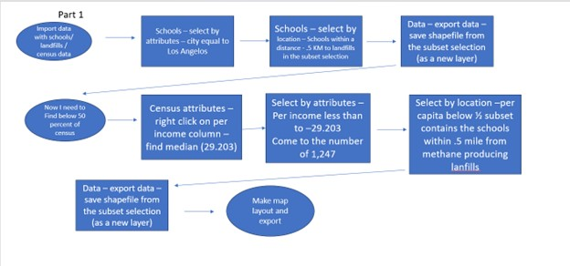
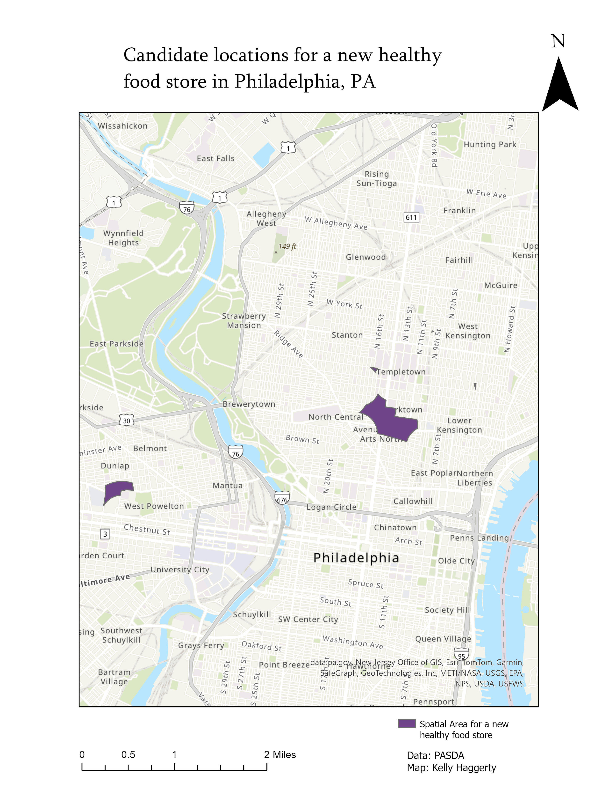
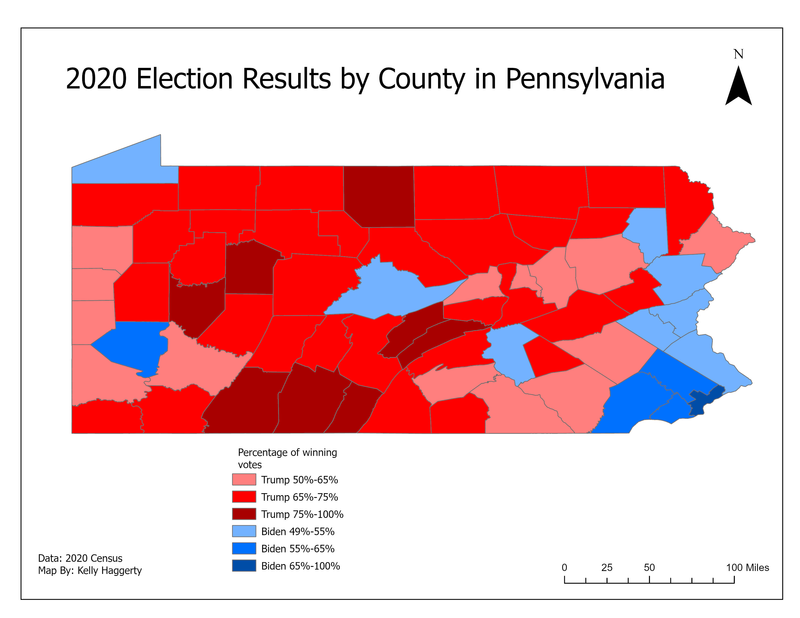

Map 1
 This was one of the first few maps we created in Fundamentals Spring of 2024 course. I learned the select by attribute tool, how toexport, save, and rename a new layer, and how to use the measuring tool. This map reflects the wealthiest census tract to have a landfill in it in LA.
The chart below the map details the steps I took in order to reach my solution.
Map 2
I’ve learned several new ways to analyze data and solve problems – I’ve also learned of a few ways to access the same thing, either by right clicking on the layer, accessing the button in the ribbon, or through the tool pane. After completing the assignment, I’ve learned of ways we can buffer points in a spatial layer, how to join two spatial layers, how to include and exclude these layers from each other, how to intersect them, and how to analyze them on a map. This has been a little different from the previous weeks that have felt very heavy in the data table, but this week also included some analysis in the data table. This lab is what I will use the most if and when I want to find any data relating to research – that is, information on waste, garbage, etc. and proximity to communities.
Here are the sq ft of each candidate location and the general area on the map which would be good for the healthy food store to be placed that are within 2,000 ft of an empowerment zone, within 2,000 ft of a subway station or regional rail, and not within 1,200 ft of a farmers Market in Philadelphia.
Map 3
I created this map by select-by attributes and export feature. First I found the percentages of votes per candidate in each bracket, and exported the data to a new layer, eventually I had 6 different layers. I color coded each layer to reflect the percentage of voters, and reflected it clearly in the legend. This map is a part of the GIS skill exercise of calculating fields. I am sure that I could have also found a way to calculate the percentages in a different way, but I wanted to leverage a skillset I knew with the tables/ excel to create this map.